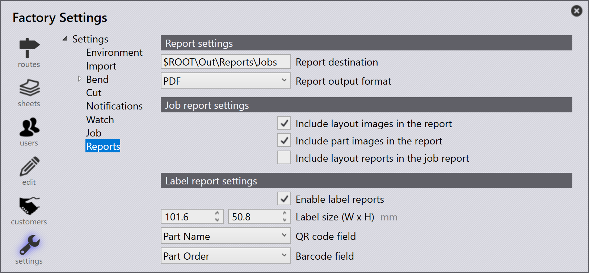

Raporty

Ustawienia raportu
Docelowa lokalizacja raportu - Użyj tej opcji, aby określić lokalizację, w której raporty mają być zapisywane.
Format wyjściowy raportu - Określa format raportu podczas eksportu (PDF lub HTML).
Ustawienia raportu o zadaniach
Uwzględnij obrazy układu w raporcie - Włącz to ustawienie, aby dołączyć obrazy layoutów do raportu.
Uwzględnij obrazy detalu w raporcie - Włącz to ustawienie, aby dołączyć obrazy części do raportu.
Uwzględnij raporty układu w raporcie o zadaniach - Włącz to ustawienie, aby linkować do raportów layoutów w raporcie zadania.
Ustawienia raportu etykiety
Włącz raporty etykiety - Włącz to ustawienie, aby umożliwić generowanie etykiet z zadania lub layoutu, gdzie kliknięcie prawym przyciskiem myszy i wybór Export Layouts lub Send to Machine odpowiednio zaprezentuje opcję wyświetlenia raportu etykiety.
Rozmiar etykiety (W x H) - Określa szerokość i wysokość etykiety w milimetrach. Te wartości definiują fizyczne wymiary wygenerowanej etykiety.
Pole kodu QR - Definiuje pole danych, które ma być zakodowane w kodzie QR na etykiecie. Lista rozwijana zawiera Part Name, Part Order i None. Wartość wybranego pola jest wyświetlana jako kod QR.
Pole kodu kreskowego - Definiuje pole danych, które ma być zakodowane w kodzie kreskowym na etykiecie. Lista rozwijana zawiera Part Name, Part Order i None. Wartość wybranego pola jest wyświetlana jako kod kreskowy.
Uwzględnij obrazy detalu w raporcie - Gdy włączone, obraz części jest dołączany do wygenerowanego raportu etykiety.